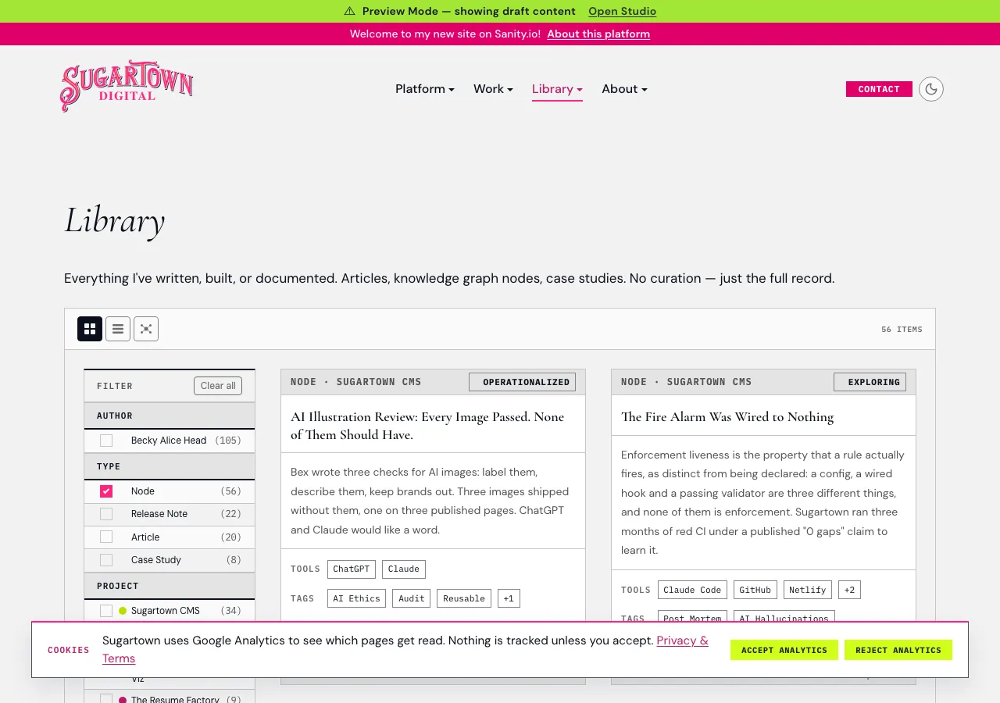

ST-275 · Sort control for archive pages
Issue #275. Phase 0 visual spec. Class names are the production names. Values are tokens unless marked.
apps/web/src/ or apps/studio/schemas/ changes until the Phase 0 boxes are ticked. Open decisions are in section 9.1. Interactive prototype
Sorting, persisted URL state and a mobile layout all fire the interactive trigger, so this is live. The six rows are the real content shape: the #116 node (published 2026-01-01, updated 2026-11-28) is the case the control exists for. Dates other than #116's are placeholders. Use the theme toggle for both themes.
Desktop, 1000px frame. Click the active segment again to flip direction. Default is Published, descending, which writes no sort param. The chips set both the order and the date shown in the list's third column header and on cards. Alphabetical leaves the date on Published. Cards show one footer date, labelled to match.
Below 768px: the view toggle and count share the first row, and the Sort by chips drop to their own full-width row. The row may need to scroll sideways at 375px, to be checked at build. Static.
2. Before and after

/library?contentType=node, 1280px. This capture is in draft preview, so it shows the unpublished #116 node first. It shows the toolbar as it stands, not the sinking order.The same toolbar with the Sort group added between the view toggle and the count. See section 1.
3. Behaviour annotations
| Item | Spec |
|---|---|
| Active state | Selected segment: solid --st-color-text-default fill, canvas-coloured label, same as SegmentedControl pill (ST-251 state contract). The selected segment carries a direction arrow (↓ or ↑). |
| Hash/anchor behaviour | No hash. Sort is a query param: ?sort=updated, ?sort=title, with &order=asc|desc only when it differs from the option's default. Published, descending, writes nothing. |
| Scroll-spy | Not applicable, the control does not track scroll. |
| Sticky/fixed | Not sticky. It scrolls with the toolbar, same as the view toggle. |
| Mobile collapse | Below 768px the Sort group wraps to its own full-width row. The three segments stay visible, no menu. The existing filter strip is unchanged. |
| List date column header | Static text over the third list column: PUBLISHED or UPDATED, following the chips. Not interactive. Alphabetical leaves it on PUBLISHED. Grid layout has no header, its card footer shows the same label. |
| Click side-effects | Re-sorts client-side, resets page to 1, keeps every filter param, uses history.push like filter changes. Clicking the active chip flips direction. The control is hidden in graph view. No scroll-to-top. |
4. Contrast, measured
| Pair | Light ratio | Dark ratio | Verdict |
|---|---|---|---|
Rest label (--st-color-text-muted) on toolbar surface | unmeasured | unmeasured | Same pair as the live count kicker, to be measured at build |
Selected label (canvas on --st-color-text-default) | unmeasured | unmeasured | Same pair as the live pill selected state |
Segment border (--st-chip-border) on surface, non-text 3:1 | unmeasured | unmeasured | Same token validate:contrast already checks |
Command: none run at Phase 0. No new colour is introduced, so the pairs above are existing ones. At build: pnpm validate:contrast, then the axe gate in both themes on /library, and a sidecar ST-275-sort-control-for-archive-pages.contrast.json measured with pnpm --filter web validate:vspec-contrast if Bex wants the composed pairs checked before sign-off.
5. Class naming table
| Class | Closest existing pattern | Decision |
|---|---|---|
.archiveSort | .archiveToolbarLeft (flex group, pages.module.css) | New. A group with its own wrap behaviour on mobile, so it cannot reuse the left group. |
.archiveSortDirection | none | New. The arrow glyph inside the selected segment. |
| List date column header | .archiveToolbarKicker style | Reuse as is, as text. No new class. |
| Card footer date label | DS Card .date | Reuse the existing class. The label is text ("PUB " or "UPD ") before the date, passed by a new dateLabel prop. No new class. |
| Sort label | .archiveToolbarKicker | Reuse as is. No new class. |
| Divider before the group | .archiveToolbarDivider | Reuse as is. |
| Segments | SegmentedControl pill classes in the DS | Reuse through the component. The prototype's .archiveSort button rules only approximate them. |
6. Component choice audit
| Candidate | Fit |
|---|---|
SegmentedControl pill (packages/design-system/src/components/SegmentedControl/) | About 80%: connected text segments, ST-251 states, keyboard arrows, three labels fit. Missing: a direction indicator and re-click-to-flip. Extend with an optional per-option direction display, no fork. |
Chip (used for the mobile Filters button) | Single toggle, no group semantics. Does not fit a one-of-three choice. |
FilterBar | Holds filter facets, and the epic's Non-Goals exclude reworking filters. Does not fit. |
Input / native select | No select primitive exists in the DS (checked by listing packages/design-system/src/components). A new one would be a new component for one use. Held as the alternative in section 9. |
| Candidate for the date display | Fit |
|---|---|
DS List register (ContentList adapter) | Has one date slot per row, as seen on the live list view (captured 2026-11-28). Extend with an optional date column header label. No new component. |
DS Card footer date | Already renders one <time>. Extend with a dateLabel string prop. No second date line. |
Decision: extend SegmentedControl, List and Card by props. No new component. Per the variant-first rule the direction indicator, the date column header and the date label are props on the primitives. One multi-case Storybook story per primitive covers the options, both directions and the mobile width.
7. Token list
| Role | Tokens |
|---|---|
| Toolbar surface and rules | --st-color-bg-surface, --st-color-rule-accent (existing toolbar) |
| Segment rest, hover, selected | --st-chip-border, --st-color-text-muted, --st-color-brand-primary, --st-state-hover-glow, --st-color-text-default, --st-color-bg-canvas |
| Type and spacing | --st-font-family-mono, --st-font-size-xs, --st-space-1, --st-space-2, --st-space-3, --st-radius-xs |
| Focus | --st-focus-ring |
8. Governance checks
| Check | Applies | Evidence |
|---|---|---|
| Phase 0 trigger (unreviewed visual format) | Yes: a new control on a reviewed surface | This file |
| Nav annotations (six) | Yes, anchor-less but state-bearing | Section 3 |
| Interactive prototype | Yes: filtering and persisted state | Section 1 |
| CSS class reuse audit | Yes | Section 5 |
| Component choice audit | Yes | Section 6 |
| Content Write Gate | Phase 2 only, the #116 re-date | Proposal table before any patch. Publish is a separate instruction. |
| Rule-file write gate | No rule file changes in Phase 1 | Phase 2 decision may propose a Studio field description, which is schema, not a rule file |
| Diagram red-pen gate | No diagram | Not applicable |
9. Decisions answered
- Control shape. Answered (2026-11-28). Chips in a row (the
SegmentedControlpill) in the archive toolbar, right aligned, with the item count centred. The same toolbar position in list and grid layouts. A dropdown was rejected because the list date column is about 110px wide and the DS has no select primitive. - Options and fields. Answered as drawn. Published (
publishedAt, releases usereleasedAt), Updated (_updatedAt), Alphabetical (title). Default Published, descending, written to no param. - Where sorting runs. Answered as drawn. Client-side. Every archive already fetches its full list and paginates in the browser (
ArchivePage.jsxpaginateItems), so no query ordering changes. The queries only gain_updatedAt. - Epic doc correction. The archive queries sit in
ArchivePage.jsxlines 100 to 153 (ARCHIVE_QUERIES), notqueries.jslines 308, 666, 978, which are other queries. Scope item 3 therefore editsArchivePage.jsx. To be fixed in the epic doc after sign-off. - Option labels. Answered (2026-11-28). "Published", "Updated", "Alphabetical", under a "Sort by" label.
- One date, follows the sort. Answered (2026-11-28). List and cards show one date, following the chips. The list gets a static column header, PUBLISHED or UPDATED. Alphabetical leaves it on PUBLISHED. Cards show the same date with a PUB or UPD label. Both dates are never shown together. Cost: you cannot compare the two dates on one row.
- Layout. Answered (2026-11-28). Toolbar columns: view toggle left, count centre, Sort by chips right. Below 768px the chips wrap to their own full-width row.
- "Recently updated" caveat.
_updatedAtmoves on any edit, including a taxonomy backfill, so it is noisy. This is the Phase 2 question: whether to add a deliberate date field instead. Not decided here.
10. Change-specific sections
Archive routes the control appears on
From apps/web/src/App.jsx lines 125 to 140, five routes render ArchivePage: /articles, /releases, /case-studies, /nodes, /library. Excluded, because they are not document archives with a shared query: /glossary, /tags, /categories, /projects, /people, /tools, /knowledge-graph.
Case study query gap
The case study query in ArchivePage.jsx (ARCHIVE_QUERIES.caseStudy, lines 141 to 152, read 2026-11-28) projects neither publishedAt nor _updatedAt. Today case study cards show no date and sort last in /library. Phase 1 adds both fields, so case studies get a date and sort correctly. This is a visible change on case study cards and list rows: a date appears where there is none now. Release notes alias releasedAt to publishedAt and need only _updatedAt added.
11. Phase 0 checklist
- [x] vspec reviewed
- [x] class table approved
- [x] component choice audit approved
- [x] open decisions answered (approved as drawn, 2026-11-28)